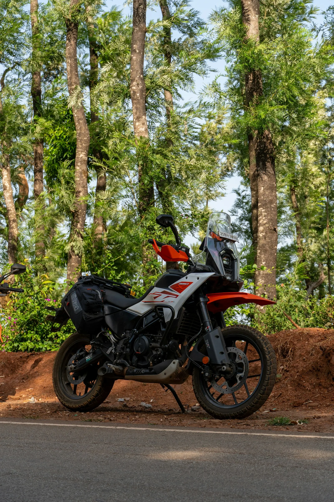

roadnotesМотоцикл · 40 минут назад · ВарнавиноПоломка и решение
Перед поездкой был уверен, что крепления кофров выдержат всё. После 300 км по грейдеру пришлось переделывать фиксацию. Оставляю фотографии, чтобы никто не повторял эту ошибку.

Как решилДве дополнительные стяжки на каждый кофр и резиновые проставки под крепления. Ещё 200 км по грейдеру без люфта.
СнаряжениеГрейдерВетлугаsasha_enduroМото · 30 минут назадПолезный ответ
Были такие же крепления. Помогла фиксация на синий резьбовой фиксатор, после этого ничего не откручивалось.
vera_na_veleВело · 12 минут назад
А на велосипедных багажниках та же беда с вибрацией. Сохранила себе.